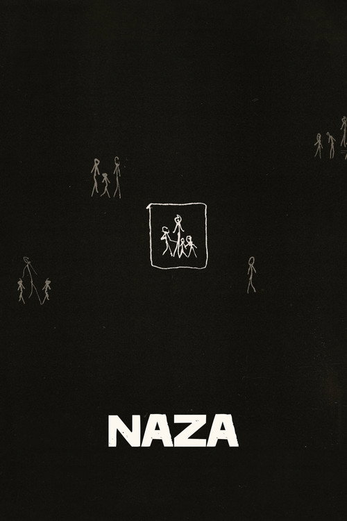

← Back to all premieres

NAZA
1h 17min
8.0/10
Documentary
Add to Calendar
IMDb
Rotten Tomatoes
Trakt
Filmed at night from Tel Aviv rooftops, this investigative documentary examines the civilian casualties of Israel's military operations in Gaza and the systems behind targeted killings of Palestinians.
Director:
Yuval Abraham, Rachel Szor
Starring:
Yuval Abraham, Benjamin Netanyahu
Trailer
Showtimes & Cinemas
ⓘ
Date
Cinema
Sun 22 Nov
WTW Wadebridge
Book →